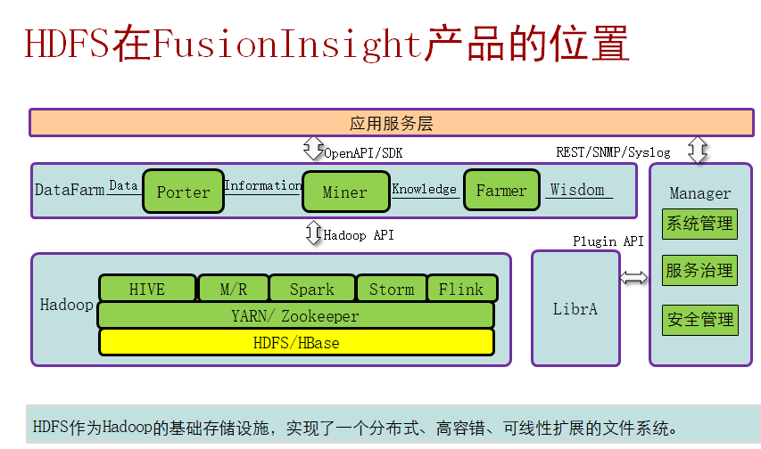

简介
Hadoop分布式文件系统（Hadoop Distributed File System）能提供高吞吐量的数据访问，适合大规模数据集方面的应用，为海量数据提供存储，提供类POSIX接口。（适合海量的，大文件流式数据访问，不适合小文件随机写入，低延迟读取）
特性（除了具备其他分布式文件系统特性外）：
- 高容错性：认为硬件不可靠
- 高吞吐量：为大量数据访问提供高吞吐量支持
- 大文件存储：支持存储TB-PB级别的数据
有两种方式会影响集群的整体可用性：
1、意外的突发事件，比如物理机器crash，集群将不可用，直到管理员重启Namenode。
2、系统维护，比如软件升级等，需要关闭Namenode，也会导致集群暂时性的失效。

基本系统架构
HDFS架构包含三个部分：NameNode，DataNode，Client。
- NameNode：NameNode用于存储、生成文件系统的元数据。运行一个实例。
- DataNode：DataNode用于存储实际的数据，将自己管理的数据块上报给NameNode ，运行多个实例。
- Client：支持业务访问HDFS，从NameNode ,DataNode获取数据返回给业务。多个实例，和业务一起运行。

图1 HA HDFS结构（高可靠性的示意图）

各个模块的功能：

HA---避免单点故障
Zookeeper（组件，协调者、仲裁者（心跳线））
（1）在分布式的集群中会部署zookeeper（zookeeper基本是选择奇数部署）
存在两个namenode，一个是active（主节点）、standy（备份节点） 如何选举----zookeeper在中间协调---使用复杂的目录进行协调
在集群启动的时候，两个namenode设备，会去 分子节点 去注册信息
如果 namenode-1 完成了信息写入，namenode-2 就不能进行写操作了（锁机制）
Namenode-2--->成为备用设备----->zookeeper会对其进行管理
为其设置监视器--ZKFC--->不断的给zookeeper发送 节点状态
一旦主节点出现故障，zookeeper会将 主节点的信息，从分子节点中删除，写入备节点信息--主节点
判断故障的机制
心跳（3s/次） 12没有接收到心跳信息
主节点和备用节点之间如何进行数据同步：
（1）平时 只有 主 namenode 提供服务
（2）namenode的备份方式为--->热备---->数据同步的问题----日志信息
（3）备用节点下载日志信息（日志文件 合并之后）
----满足下面的两个条件之一：文件大小到64M，累积写入1h
（4）备用节点，会整理日志信息，整理成索引（FSimage）的形式---存储到本地--->
（5）此时可能和 主节点间有时间差
（5.1）不发生故障，主节点和备节点 存在差异，没有关系
（5.2）发生故障，备节点会将 剩余日志 进行下载
元数据持久化机制


HDFS读流程

如图所示
（1）client向NM发起读请求，NN 返回 位置信息（所有的副本位置）
（2）客户端 去离自己最近的 并且 是 有效的节点上读取信息
（2.1）不读取
（2.2）去读取 离自己 次近的 节点信息
（2.3）反馈给NN节点 ---如果发现某个节点 信息 无效
HDFS写流程

（1）客户端要进行数据写入的操作，先去找namenode---要写入什么文件、大小、写入位置
（2）namenode 首先判断一下 对于 该目录是否有 写入权限
（2.1）如果没有写入权限，就拒绝写入
（2.2）如果有写入权限：namenode返回 可以写入 分布的数据块信息
（3）客户端 根据 分配的节点信息，进行第一个数据块的写入，目前在写入的时候 只写入第一个副本，剩余的其他副本，由节点之间直接进行 写入
第二个Datanode去找第一个DN
第三个DN 去找第二个DN
（4）确认阶段
第三个DN 去给 第二个DN回复ACK
第二个DN 去个第一个DN回复ACK
第一个DN 给 Clinet回复ACK，告诉client 第一个block写入完成
．．．．
（7）客户端收到 所有的 block 的ACK之后，告诉 namenode 写入完成
注：
客户端 会把block 分成 小的packet---64k
客户端包packet放到 data队列中，每次发生一个packet，就会从data队列中移除，
加入到ack队列 接收到ack之后，会从ack队列中 移除 相应的标记 data队列 和
ack队列 都没有数据的时候，就认为 数据写入完成
副本机制

数据存放到HDFS中，是分成块之后 才进行存储的
（1）RACK1的Node1---->0：client直接在node1上部署
（2）RACK1的node2----->2：clinet和node2在一个机架上，但是是不同设备
（3）RACK2的node1----->4：client和RACK3上的node4，在不同机架
需要存储三个副本
（1）理想情况下，第一个副本----保留在distance为0
（2）第二个副本---->保留在distance为4
（3）第三个副本---->保留在distance为2
（5）剩余的其他副本，随机存储
健壮性机制
主要保证数据的有效性
（1）重建失效盘的副本：namenode 会 向 失效的 datanode 发起重建的动作
如果DN的数据盘出现故障，就会出现少的block汇报信息--->检查不到磁盘信息 NM收到汇报信息之后，发现数据缺失---节点故障---NM会发起重建动作 如果缺少block7和block9
（1.1）NM会找block7和block9的副本，让副本服务器发起复制操作
（1.2）将数据 复制到 较为空闲+负载低的节点上
（2）集群数据负载均衡：数据在各个节点上均衡存放
（2.1）按照副本机制，本机架本节点、本机架其他节点
（2.2）会周期性的调用 负载均衡机制，强制集群里面的数据均匀存储
（3）数据有效性保证
从DN上读取数据的时候，DN会帮你进行校验的---CRC校验
（3.1）如果校验一致，直接读取
（3.2）校验不一致，从其他节点上读取数据
（4）元数据可靠性--FSimage
（5）安全模式--->自动进入安全模式（手工进入）
1.在数据节点、硬盘出现故障的时候，可以方式故障扩散
2.只能读取数据，不能写入数据
配置HDFS数据存储策略
- 默认情况下，HDFS NameNode自动选择DataNode保存数据的副本。在实际业务中，存在以下场景：
- DataNode上存在的不同的存储设备，数据需要选择一个合适的存储设备分级存储数据。
- DataNode不同目录中的数据重要程度不同，数据需要根据目录标签选择一个合适的DataNode节点保存。
- DataNode集群使用了异构服务器，关键数据需要保存在具有高度可靠性的节点组中。